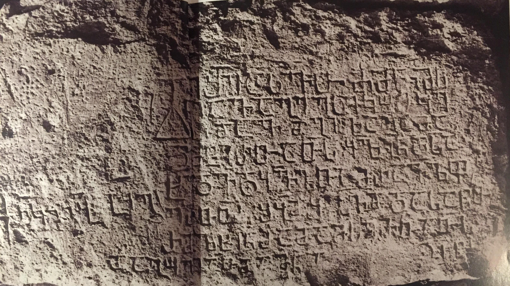

ციხისუბნის ასვათის წარწერა
შინაარსი / Summary
პოეზია
ბიბლიოგრაფია Bibliography
კრიტიკული გამოცემა Interpretive Edition
ქ(რისტ) შ(ეიწყალ)ე ასვ(ა)თ ძმ(ა)ნი მ(ი)ს -
ნი ავაგე ესე კოშკე -
ბი დავდგი ლაგამა -
დ მტერთათ(ჳ)ს ყ(ოვე)ლგ(ა)ნ დ(ა)სა -
5ხედ(ა)ვ(ა)დ ყ(ო)ვ(ე)ლთა მრავ(ა)ლფ -
ერთ(ა)თ(ჳ)ს შ(უე)ბ(ა)დ შ(ა)ჰვ(ა)დ და საწ(უ)თ -
რ(ა)დ ლხენ(ა)დ ადამ(ი)ს ერთათ(ჳ)ს
და გოლიათ(ა)დ ნაგები მიუვალია თ(ა)თ(ჳ)ს
ქრ(ონი)კ(ონ)ი იყ(ო) ტკგ
დიპლომატიური გამოცემა Diplomatic Edition
Ⴕ ႸႤ ႠႱႥႧ ႻႫႬႨ ႫႱ
ႬႨ ႠႥႠႢႤ ႤႱႤ ႩႭႸႩႤ
ႡႨ ႣႠႥႣႢႨ ႪႠႢႠႫႠ
Ⴃ ႫႲႤႰႧႠႧႱ ႷႪႢႬ ႣႱႠ
5ႾႤႣႥႣ ႷႥႪႧႠ ႫႰႠႥႪႴ
ႤႰႧႧႱ ႸႡႣ ႸჀႥႣ ႣႠ ႱႠႼႧ
ႰႣ ႪႾႤႬႣ ႠႣႠႫႱ ႤႰႧႠႧႱ
ႣႠ ႢႭႪႨႠႧႣ ႬႠႢႤႡႨ ႫႨႳႥႠႪႨႠ ႧႧႱ
ႵႰႩႨ ႨႷ ႲႩႢ

ციხისუბნის ასვათის წარწერა
{'ka': 'ქრისტე, შეიწყალე ასვათ და ძმანი მისნი.\n ავაგე ესე კოშკები, დავდგი ლაგამად მტერთათჳს\n ყოველგან დასახედავად, ყოველთა მრავალფერთათჳს,\n შუებად, შაჰვად და საწუთრად, ლხენად ადამის ერთათჳს\n და გოლიათად [ნაგები მიუვალია მტერ]თათჳს.\n ქრონიკონი იყო ტკგ (323).'}
{'default': 'წარწერაში გამოყენებულია ორწერტილი განკვეთილობის ნიშნად. ქარაგმის ნიშანი - განივი, სწორი ხაზი. წარწერის ბოლო, თარიღის აღმნიშვნელი სტრიქონი\n ამოკვეთილია დანარჩენი ტექსტის მარცხნივ, ფილის თავისუფალ ზედაპირზე და სრული, დაუზიანებელი სახითაა მოღწეული (ქრონიკონი 323. 323+780=1103).\n ლექსის მეოთხე სტრიქონი ვალერი სილოგავას პირობითი აღდგენაა, იგი ტექსტის საერთო შინაარსსა და მასში მიღებულ სალექსო ზომას ეყრდნობა. შესაძლებელია აღდგენის სხვა ვარიანტიც.\n წარწერა თავისი შინაარსით საამშენებლოა და კოშკების აგების ფაქტს გადმოგვცემს. ვინმე ასვათს ქვაბლიანისწყლის ხეობაში, ციხისუბნის მიდამოებში აუგია სათვალთვალო\n („ყოველგან დასახედავად“) კოშკები სხვადასხვა („მრავალფერთათჳს“) მტრების შემოსევებისა თუ თავდასხმების შესაჩერებლად და მოსაგერიებლად („ლაგამად მტერთათჳს“).\n წარწერა განსაკუთრებულია იმით, რომ იგი გადმოცემულია თექვსმეტმარცვლიანი შაირით, რომელსაც „რუსთაველური“ ეწოდება. ციხისუბნის წარწერა-ლექსში\n ეს საზომი გამოყენებულია „ვეფხისტყაოსნამდე“ ასი წლით ადრე.\n პალეოგრაფიული თავისებურებანი: ასო ო-ს დაწერილობა ნუსხური მოხაზულობით, დონის ორნაირი გადმოცემა: მრგვალ წრეზე მაღალი ყელით დაკავშირებული განივი ხაზით\n - უმეტეს შემთხვევაში აქ დონი ასეთი მოხაზულობისაა და ოთხ შემთხვევაში - განუსხურებისაკენ მიდრეკილებით. ყურადღებას იქცევს ასევე მანის გადმოცემა\n ასოს ტანის დარჩენილ ნაწილებთან შედარებით წაგრძელებული ზედა განივი ხაზით, საერთოდ, წარწერაში ჯერ კიდევ არ გვაქვს ხვეული ხელის ან შეწიაღების მაგალითები.\n ასომთავრული ასოები ოდნავ წაგრძელებული მოხაზულობისაა. ცალკე ყურადღებას იქცევს დასაწყისში დასმული ნიშანი: სამკუთხედზე აღმართული ჯვარი. ჯვრის დასმა\n ტექსტების დასაწყისში ჩვეულებრივია, მაგრამ იმ სახით დასმა, როგორიც ამ წარწერაშია, სხვაგან არსად გვხვდება. ჯვარი შედის წარწერის პირველი სიტყვის შემადგენლობაში,\n როგორც სიტყვა ქრისტეს პირველი ასო. ასეთი ჯვარი ფილაზე კიდევ ორია.\n წარწერაში მოხსენიებული ასვათი, ვალერი სილოგავას აზრით, უნდა იყოს ამხეს საუმარგის, ბერძენის, ქობულის, პაზარიჱლის, გაბრიელის და ასვათის წარწერაში მოხსენიებული\n ასვათი, ეს წარწერაც ციხისუბნის წარწერის თანადროულია. ახვეს წარწერაში ჩამოთვლილი სხვა პირები შეგვიძლია მივიჩნიოთ ციხისუბნის წარწერაში სახელების აღუნიშნავად\n დასახელებულ ასვათის ძმებად.'}
<div type="edition" xml:lang="ka" ana="mtavruli" xml:space="preserve">
<ab>
<lb n="1"/><w lemma="ქრისტე"><expan><abbr>ქ</abbr><ex>რისტ</ex><abbr>ე</abbr></expan></w>
<w lemma="განსუენება"><expan><abbr>გა</abbr><ex>ნ</ex><abbr>ო</abbr><ex>ჳ</ex><abbr>ს</abbr><ex>უ</ex><abbr>ენე</abbr></expan></w>
<w lemma="სულ">სოჳ<lb n="2" break="no"/>ლსა</w>
<name nymRef="ვაჩა">ვაჩაჲს<lb n="3" break="no"/>ასა</name>
<name nymRef="გურა"><expan><abbr>გო</abbr><ex>ჳ</ex><abbr>რაჲ<lb n="4" break="no"/>სასა</abbr></expan></name>
<name nymRef="მირა"><expan><abbr>მ</abbr><ex>ი</ex><abbr>რა</abbr><ex>ჲ</ex><abbr>ს</abbr><ex>ა</ex><abbr>ს</abbr><ex>ა</ex></expan></name>
</ab>
</div>